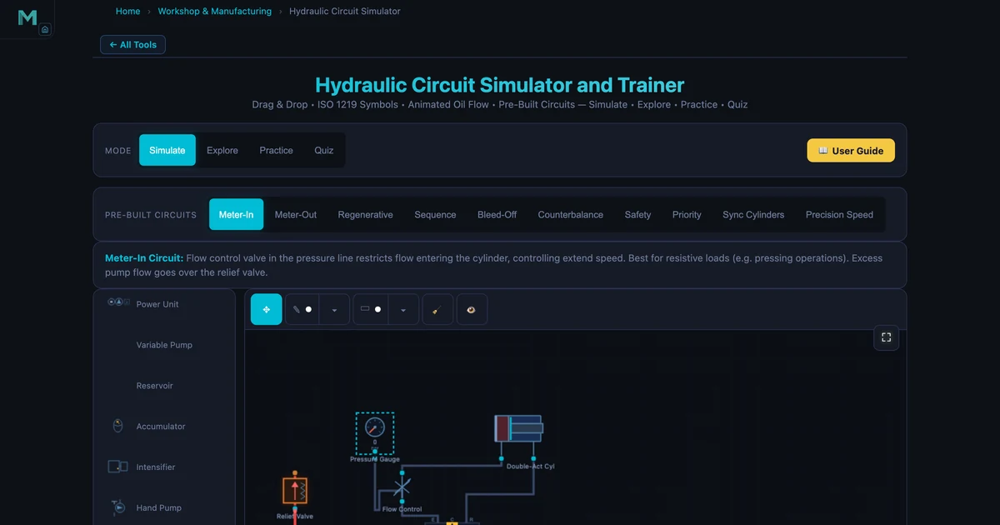
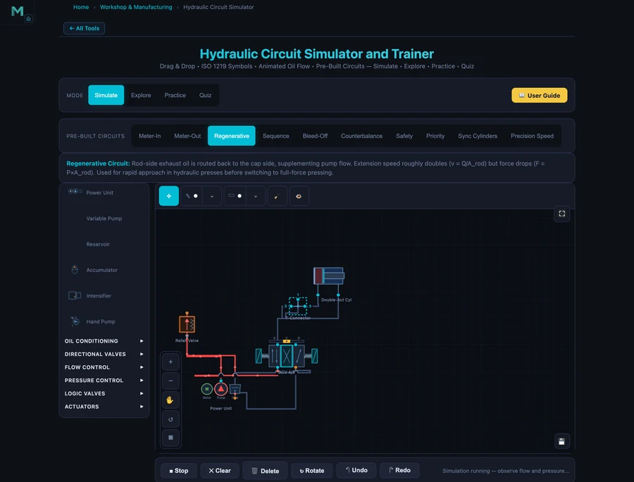

Hydraulic Circuit Simulator — Meter-In, Meter-Out, Regenerative & Sequence Circuits

- Every hydraulic circuit obeys two equations: force F = P × A (pressure times piston area) and speed v = Q / A (flow rate divided by piston area).
- Meter-in puts the flow control valve in the pressure line (best for resistive loads like pressing); meter-out puts it in the return line (best for overrunning, gravity-assisted loads); a regenerative circuit routes rod-side oil back to the cap side, extending about 1.46× faster (A_bore/A_rod) but at reduced force F = P × A_rod.
- A sequence valve guarantees one actuator finishes before the next starts by opening only when pressure exceeds its setting (set above the first cylinder's working pressure), and every circuit needs a relief valve set 10–20% above working pressure.
Hydraulic systems power everything from CNC machine tool clamps to excavator booms to aircraft landing gear. But ask a student to sketch the difference between a meter-in and meter-out circuit, or explain why a regenerative circuit runs faster but with less force — and you'll often get a look of quiet uncertainty. The hydraulic circuit simulator changes that by putting interactive ISO 1219 circuit diagrams in the browser, complete with animated flow, real component parameters, and ten prebuilt circuits ranging from basic meter-in to synchronised dual-cylinder systems.
Why hydraulic circuit theory is hard to learn from diagrams alone
The challenge with hydraulic circuits isn't the individual components — most students can identify a relief valve or a 4/3 directional control valve. The problem is understanding how the components interact. Where exactly does the pressure build? What happens to flow when the cylinder stalls? Which path does oil take when you add a sequence valve?
Static schematic diagrams don't answer those questions well. You can stare at a correctly drawn meter-in circuit and still not feel the logic of why overrunning loads are a problem. The simulator animates fluid flow through the circuit, highlights which components are active, and shows the circuit description alongside the drawing. It's the difference between reading about a machine and watching it run.
The core workflow is simple: click a prebuilt circuit from the toolbar — Meter-In, Meter-Out, Regenerative, Sequence, Bleed-Off, Counterbalance, or Safety — then click Run to animate the flow. Each circuit loads with the correct ISO 1219 symbols, pre-routed connections, and a written description. You can also drag components onto the canvas yourself and wire them manually in the free-build mode.
Common ISO 1219 hydraulic symbols
Every circuit in the simulator is drawn with standard ISO 1219 graphic symbols — the same notation you'll see on real machine schematics. Knowing what each symbol does is the first step to reading a circuit fluently.
| Component | ISO 1219 symbol | Function |
|---|---|---|
| Fixed-displacement pump | Circle with a solid filled triangle pointing out | Converts motor rotation into hydraulic flow at a fixed volume per revolution |
| Relief valve | Square with an arrow and an opposing spring symbol | Normally closed; opens above its cracking pressure to divert excess flow to tank and cap system pressure |
| 4/3 directional control valve | Three stacked boxes (envelopes) with flow-path arrows | Four ports, three positions; routes oil to extend, retract, or hold the cylinder (centre position) |
| Flow control valve | Arrow through a restriction, often with a bypass check valve | Restricts flow to set actuator speed (meter-in on the inlet, meter-out on the return) |
| Double-acting cylinder | Rectangle with a piston, rod, and two ports | Powered in both directions; force = pressure × piston area on the active side |
| Reservoir (tank) | Open-topped U shape | Stores and conditions the oil; the return point for all relief and exhaust flow |
The fundamental hydraulic equations
Two equations govern every hydraulic circuit. The first is Pascal's law — pressure applied to a confined fluid transmits equally in all directions — which gives the force equation:
\[F = P \times A\]
where F is the cylinder force (N), P is pressure (Pa = N/m²), and A is the piston area (m²). A cylinder with an 80 mm bore and 150 bar pressure produces: A = π×0.08²/4 = 0.005027 m², F = 150×10⁵ × 0.005027 = 75.4 kN. Increasing bore doubles area — and doubles force at the same pressure.
The second is the continuity equation, which gives cylinder speed:
\[v = \dfrac{Q}{A}\]
where v is piston velocity (m/s), Q is flow rate (m³/s), and A is piston area (m²). For a 40 L/min pump and 80 mm bore: Q = 40/60000 = 6.667×10⁻⁴ m³/s, v = 6.667×10⁻⁴/0.005027 = 132.7 mm/s. More flow or smaller bore means faster cylinder.
The four core circuit types and when to use each
Meter-In — the default choice for resistive loads
In a meter-in circuit, the flow control valve sits in the pressure line — between the directional control valve (DCV) and the cylinder cap end. It restricts flow entering the cylinder. Excess pump flow bypasses over the relief valve back to tank, wasting energy as heat. Speed is consistent because the inlet restriction controls exactly how much oil enters regardless of load. This makes meter-in the right choice for pressing, clamping, or any application where the external load opposes cylinder motion.
The problem with meter-in is overrunning loads. If the load assists cylinder motion — a vertical cylinder lowering a heavy weight, for example — the cylinder can accelerate beyond the flow control setting. The cap side gets pulled forward faster than oil can enter, creating a vacuum (cavitation) on the inlet. For those applications, meter-out is the answer.
Meter-Out — for overrunning and gravity-assisted loads
In a meter-out circuit, the flow control valve is placed in the return line — between the cylinder rod end and the DCV. It restricts oil leaving the cylinder, creating back-pressure on the rod side that resists uncontrolled acceleration. Even if the load is trying to pull the cylinder forward, the restricted return line governs speed.
The trade-off: meter-out builds higher rod-side pressure (the back-pressure plus the load pressure must both be satisfied), which reduces the net extend force slightly. For lowering operations, lifting platforms, and any cylinder with a gravity-assisted load, meter-out is the standard choice.
Regenerative Circuit — trading force for speed
The regenerative circuit is an elegant trick. Instead of sending rod-side exhaust oil to tank, it routes it back to the cap side of the same cylinder during extension. The cylinder effectively receives pump flow plus rod-side return flow — so the total flow into the cap is greater than the pump alone can provide.
The extend speed becomes:
\[v_{\text{regen}} = \dfrac{Q_{\text{pump}}}{A_{\text{rod}}} = \dfrac{Q_{\text{pump}}}{\pi(D^2 - d^2)/4}\]
where D is the bore diameter and d is the rod diameter. For an 80 mm bore, 45 mm rod cylinder, Arod = π(80²−45²)/4 = π(6400−2025)/4 = π×4375/4 = 3436 mm². Compare to full-bore extend: Abore = π×6400/4 = 5027 mm². Regenerative speed ratio = Abore/Arod = 5027/3436 ≈ 1.46× faster. But the extend force drops: Fregen = P × Arod = P × 3436 mm² instead of P × 5027 mm² — about 32% less force than normal extension. Hydraulic presses use regenerative mode for fast approach before switching to full-force pressing by isolating the rod-side exhaust from the cap.

Sequence Circuit — controlled multi-actuator operations
A sequence circuit solves a precise problem: how do you guarantee that one actuator finishes its stroke before another starts, using a single pump and one directional valve? The answer is a sequence valve — a normally closed pressure valve that opens when upstream pressure exceeds its set point.
Here's how it works. Cylinder 1 (clamp) and Cylinder 2 (work tool, e.g. drill) share the same pressure line. Cylinder 1 extends first because it sees full pump pressure. The sequence valve on the Cylinder 2 branch is set at 100 bar — above the 80 bar needed to move the clamp. While Cylinder 1 is extending against its load, pressure stays at ~80 bar; the sequence valve stays closed and no oil reaches Cylinder 2. When Cylinder 1 stalls at end-of-stroke, pressure rises above 100 bar, the sequence valve opens, and Cylinder 2 activates. The result: clamp always completes before the drill touches the workpiece.
Sequence circuits appear in clamp-then-drill operations, two-stage presses, and ejector systems in injection moulding machines. The simulator's Sequence prebuilt circuit shows both cylinders, the sequence valve, and the flow path clearly.
Key hydraulic components and what they do
Relief valve. Every circuit must have one. Normally closed; opens when pressure hits the cracking setting to protect the system. Set 10–20% above working pressure. If undersized, pressure ripple causes chattering. If set too high, component damage follows.
4/3 Directional Control Valve (DCV). "4/3" means 4 ports (P, T, A, B) and 3 positions (extend, neutral, retract). The center position determines what happens at neutral: open-center connects P and T (pump unloads to tank — low energy waste), closed-center blocks all ports (holds pressure), or float-center connects A and B to T (cylinder free to move — useful for gravity lowering). Getting the center condition wrong causes either pressure build-up in a stopped circuit or uncontrolled drift.
Check valve. Allows flow in one direction, blocks in reverse. Used to prevent backflow through the pump when the system is off, hold loads on vertical cylinders, and isolate circuit branches. Note: a standard check valve cannot hold a suspended load indefinitely — oil seeps past the poppet. Pilot-operated check valves (POCVs) provide positive load-holding.
Flow control valve. Restricts flow to control actuator speed. Pressure-compensated versions maintain constant flow regardless of load pressure fluctuations — essential for consistent speed under varying loads. Uncompensated needle valves let speed drift as load changes.
How to use this in a lesson
Component identification (5 min). Load the Meter-In circuit. Walk students through each ISO 1219 symbol — pump, relief valve, DCV, flow control, cylinder. Stop at each and ask what it does. This is faster than a lecture on symbols because the connections are visible right there in the diagram.
Speed control comparison (15 min). Load Meter-In, run it, describe the flow path. Then load Meter-Out. Ask: where is the flow control placed? What happens to speed if the load increases? Which circuit is better for lowering a heavy vertical cylinder? Let students answer before confirming. The visual difference in valve placement makes the distinction stick. This approach complements the heat transfer simulator article's method of building intuition through side-by-side comparison of contrasting configurations.
Regenerative experiment (10 min). Load the Regenerative circuit. Ask students to predict the speed ratio before you reveal the formula. They'll usually guess "faster" but won't know the factor. Calculate vregen/vnormal = Abore/Arod for their chosen bore and rod. Then ask: if speed increases, what happens to force? Walk through F = P × Arod vs F = P × Abore. The trade-off — more speed, less force — is a recurring theme in hydraulic design.
Design challenge (10 min). Clamp-and-drill scenario: cylinder 1 needs 80 bar to complete its clamp. What should the sequence valve be set to for cylinder 2? Answer: 80 + margin = 100 bar. Build the sequence circuit, adjust the sequence valve setting in the component panel, and run it. Students see that if the setting is too low (say 70 bar), both cylinders fight for flow at once.
Try It Yourself
All tools below are free — no account, no download.
Key Takeaways
- Hydraulic force is F = P × A. Increasing bore area (not pressure) is the most direct way to increase cylinder force while staying within component pressure ratings.
- Meter-in places the flow control in the pressure line — best for resistive loads (pressing, clamping). Meter-out places it in the return line — best for overrunning and gravity-assisted loads.
- Regenerative circuits route rod-side exhaust back to the cap side, increasing extend speed by Abore/Arod but reducing force to F = P × Arod. Used for fast approach in presses.
- Sequence valves guarantee sequential actuator operation: set the valve above the first cylinder's working pressure. When that cylinder stalls, pressure rises and the second circuit opens.
- Every hydraulic circuit must have a relief valve set 10–20% above working pressure. Without it, a stalled actuator will dead-head the pump — pressure rises until a line fails.
- The 4/3 DCV center condition matters: open-center unloads the pump (energy efficient), closed-center holds pressure, float allows free gravity movement.
Frequently Asked Questions
What is a meter-in hydraulic circuit?
In a meter-in circuit, the flow control valve is placed in the pressure line — between the directional control valve and the cylinder cap end. It restricts flow entering the cylinder, controlling extend speed. Meter-in is best for resistive loads where the load opposes motion (e.g. pressing, clamping). It is not suitable for overrunning loads — with gravity assisting the cylinder, the rod can accelerate uncontrollably past the flow control valve.
How does a regenerative hydraulic circuit work?
In a regenerative circuit, the rod-side exhaust oil is routed back to the cap side of the same cylinder during extension, supplementing pump flow. Since the annular rod-side area is smaller than the full bore area, the rod side returns less oil than the cap side needs — but pump flow makes up the difference. The cylinder extends at v = Q/A_rod — faster than normal (v = Q/A_bore). Force drops to F = P × A_rod. Regenerative mode is used for rapid approach in hydraulic presses before switching to full-force pressing.
What does a relief valve do in a hydraulic circuit?
A relief valve is the primary safety device in any hydraulic circuit. It is normally closed and opens when system pressure exceeds its spring setting (cracking pressure), diverting excess flow back to tank. This protects pumps, valves, and cylinders from overpressure damage. Every hydraulic circuit must have at least one relief valve. The setting should be 10–20% above working pressure to allow for pressure spikes while still providing protection.
What is a sequence circuit used for?
A sequence circuit uses a sequence valve to ensure one actuator completes its stroke before the next one begins. The sequence valve is set above the first cylinder's working pressure. When the first cylinder stalls (reaches end of stroke), system pressure rises above the sequence valve setting and opens flow to the second cylinder. Sequence circuits are used in clamp-then-drill operations, lift-then-push, and multi-stage pressing — wherever two actions must happen in a defined order.
What is the difference between meter-in and meter-out speed control?
Meter-in places the flow control valve in the inlet (pressure) line to the actuator, restricting flow entering. Best for resistive loads. Meter-out places the flow control valve in the return line from the actuator, restricting flow leaving. Best for overrunning loads (gravity-assisted), because the back-pressure on the return side prevents the cylinder from running away. Meter-out creates higher rod-side pressure but provides better speed control when the load could push the cylinder forward on its own.
Hydraulic circuits are everywhere in industrial machinery — and the engineering students who learn them properly have a genuine advantage in any manufacturing, automotive, or heavy equipment career. Understanding why the sequence valve must be set above the clamp pressure, or why the regenerative circuit trades force for speed, is not arcane knowledge. It's how real machines are designed.
Open the Hydraulic Circuit Simulator and load the Regenerative prebuilt. Run it, then switch to the Sequence circuit and set the sequence valve setting to 70 bar — below the required clamp pressure. Watch both cylinders fight for flow at once. Then set it back to 100 bar and watch the correct sequence restore itself. That experiment makes the concept permanent.